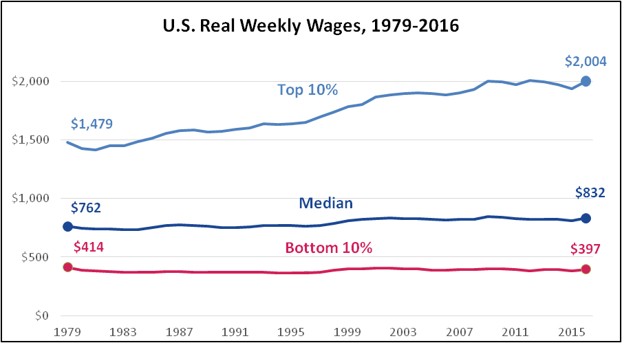
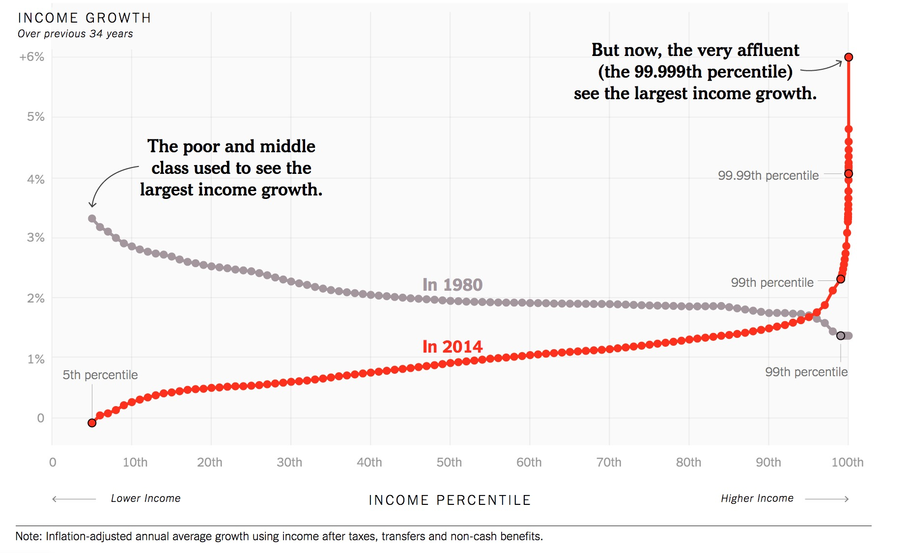

Wealth Inequality
Wealth inequality is the cause of an abundance of political conflict in modern society. In 2017, over 82% of the global wealth went to the top 1% of earners across the globe in 2017. 1 This increase in wealth disparities is expected to rise within the upcoming years in result of political decisions and protective barriers for the rich. Income Inequality across regions is measured by "the Gini Coefficient" , an index used to access wealth distribution and income inequality. For example, a country with complete equality has Gini Coefficient of 0, while a country where one person owns all the wealth has a Gini of 1.

Inequality differs largely by country. Interested in where you might rank across the globe? Use this tool by Care International to see if you are part of the Global 1%!
Inequality in the United States
Across all "developed" nations, wealth inequality is the highest in the United States. We have come to the point in society where inequality has now become a defining characteristic of our country. In large metropolitan cities, a commonplace experience is witnessing rampant homeless amidst the sea of luxury condominiums and designer stores. This upsetting juxtaposition will likely continue as income inequality rises in the United States. The Gini coefficient for the US is a staggering 41.5 3, making the US the most unequal developed country in the world.
Wealth dispersion wasn’t always like this in the US. During the Great Depression, the United States saw a dramatic rise in poverty and homelessness around the country. Political efforts sought to combat this were not only warranted, they were demanded. President Roosevelt's New Deal passed a series of federal programs and regulations with the goal of ameliorating the economic dysfunction within the United States. After WWII, the country saw a radical reformation in the workplace along with the decline in union membership. This led to inequalities between the overall income of the average worker and their employers, with CEO’s exceedingly making exponential growths in their income compared to the average worker. 4 Those trends continue today, with the average CEO making 354: 1 ratio of the wealth to everyday workers. 1


References
- Alejo Vázquez Pimentel, D., Macías Aymar, I., & Lawson, M. (2018). Reward Work, Not Wealth: To end the inequality crisis, we must build an economy for ordinary working people, not the rich and powerful. Oxfam. https://doi.org/10.21201/2017.1350
- Alvaredo, F., Chancel, L., Piketty, T., Saez, E., & Zucman, G. (2017). World inequality report 2018. The World Inequality Lab, http://wir2018. wid. world.
- Data.worldbank.org. (2018). GINI index|Data. [online] Available at: https://data.worldbank.org/indicator/SI.POV.GINI [Accessed 03 March, 2018].
- Jimmy Carter. (n.d.). In Wikipedia. Retrieved March 15, 2018, from https://en.wikipedia.org/wiki/Great_Depression
- Bureau of Labor Statistics, U.S. Department of Labor, US Weekly Wages at https://www.bls.gov/cps/earnings.htm(visited April 06, 2018).